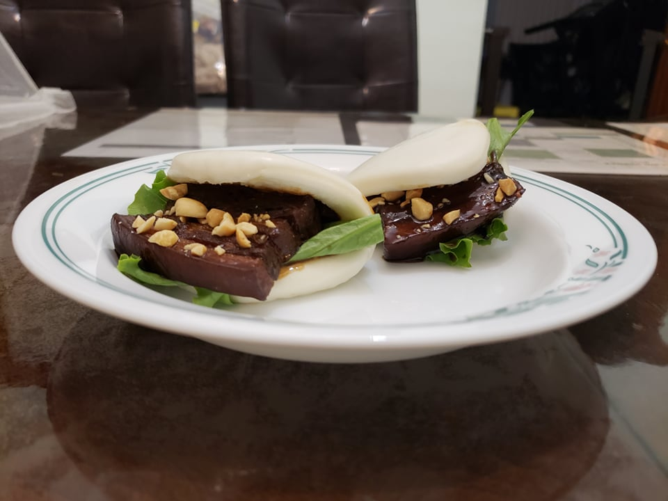

Gua Bao

Ingredients:
Pork:
- 1 lb Boneless pork belly, cut into 2 pieces
- 4 cups Chicken stock
- 1 1/2 cup Light soy sauce
- 1 cup Black soy sauce
- 1/2 cup Oyster sauce
- 1/2 cup Light brown sugar
- 7 Whole star anise
- 5 Whole black peppercorns
- 2 Cinnamon sticks
- 2 cloves Garlic, smashed
- 1 Bay leaf
Other Ingredients:
- 10 Bao buns
- Kewpie mayonaise
- Butter lettuce
- Dry roasted peanuts, finely chopped
- 1/2 tsp Cornstarch
Instructions:
- Combine all the ingredients pork ingredients into a pot and bring to a boil. Reduce heat to low and simmer for 1 hour.
- Remove the pork from the pot and reserve the broth. Let the pork rest for a few minutes on a cutting board.
- While the pork rests, prepare a steamer for the buns. Line a steamer with lettuce and place the buns into the steamer. Steam for 8-10 minutes.
- Cut the pork into 1/3 inch slices. Place enough reserved broth to reach halfway up a slice of pork, about 1 cup, into a large pan. Place onto medium high heat and stir in the cornstarch. In batches, add in slices of pork and cook for 1-2 minutes on each side.
- For each bun, place some mayonaise, a small piece of lettuce, 1-2 pork slices, and sprinkle with chopped peanuts.